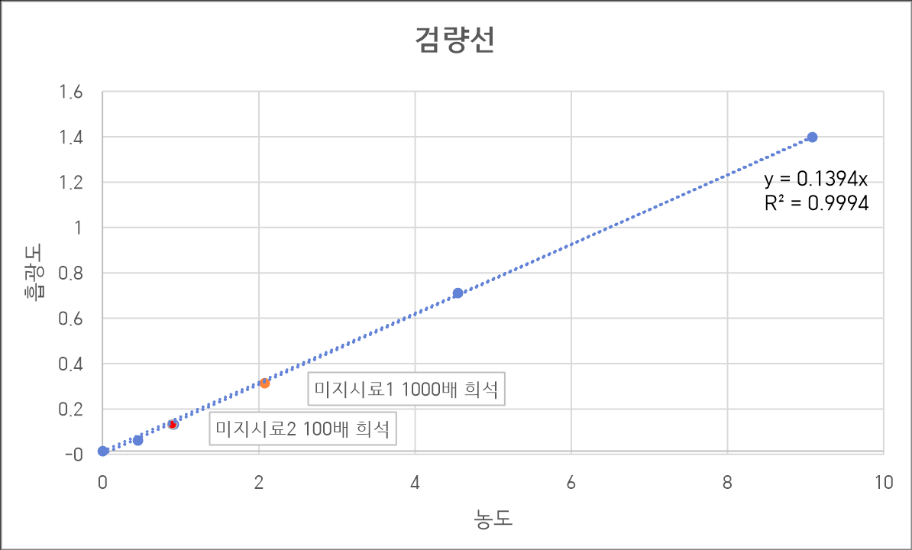

🔬 [실습 03] 분광광도계를 이용한 식용색소(Brilliant Blue FCF)의 농도 측정 및 정량 분석
실험 일자: 2026년 4월 30일 | 작성자: 양아영
1. 실험 목적 (Objective)
분광광도계의 구조와 원리를 이해하고, 비어-람베르트 법칙(Beer-Lambert Law)을 활용하여 물질의 농도를 정량하는 방법을 익힙니다. 농도를 알고 있는 표준 용액으로 검량선(Standard Curve)을 작성하고 결정계수(R²)를 통해 분석 데이터의 선형성과 신뢰도를 평가하며, 미지 시료의 흡광도로부터 실제 농도를 정확히 계산하는 능력을 배양합니다.
2. 실험 원리 및 배경 (Background)
- 분광광도법: 시료 용액이 특정 파장의 빛을 흡수하는 정도(흡광도)를 측정하여 물질의 양을 분석하는 방법입니다.
- 비어-람베르트 법칙 (A = εcl): 흡광도(A)는 시료의 농도(c) 및 빛이 통과하는 길이(l)에 비례합니다.
- Brilliant Blue FCF: 식용색소 청색 1호로, 분자량은 792.85이며 최대 흡수 파장은 630nm입니다. 본 실험은 630nm 파장에서 진행되었습니다.
3. 실험 재료 및 방법 (Materials & Methods)
[실험 재료] Brilliant Blue FCF 시료, 증류수(DW), 분광광도계, 정밀 저울, 마이크로파이펫, 큐벳, 1.5mL 마이크로 튜브
[단계적 희석 (Serial Dilution)] 5 mg/mL, 10 mg/mL 농도의 원액을 순차적으로 10배씩 단계별 희석을 수행하였습니다. 모든 희석 단계는 이전 단계 용액 100uL에 증류수 900uL를 첨가하는 방식으로 동일하게 진행하여 0.5, 1, 5, 10 ug/mL 등의 표준 용액을 제조했습니다.
[흡광도 측정] 분광광도계의 파장을 630nm로 설정하고, 증류수(Blank)로 영점을 조절한 뒤 각 농도별 표준 용액의 흡광도를 기록하였습니다.
4. 실험 결과 (Results)
① 표준 용액의 농도별 흡광도 데이터
- BLANK (증류수): 0.000 A
- 0.5 ug/mL: 0.047 A
- 1 ug/mL: 0.120 A
- 5 ug/mL: 0.703 A
- 10 ug/mL: 1.394 A
*참고: 50 ug/mL(3.697A) 및 100 ug/mL(3.845A) 구간은 흡광도가 너무 높아 비어-람베르트 법칙의 직선성이 유지되지 않으므로 검량선 작성 범위에서 제외하여 데이터의 신뢰도를 높였습니다.
② 검량선 회귀방정식 도출
선형 회귀 분석을 통해 도출된 직선의 방정식은 y = 0.1394x 이며, 이때의 결정계수 R² = 0.9994 입니다. R² 값이 1에 매우 가까우므로 본 분석 데이터의 직선성과 신뢰성이 매우 높음을 입증하였습니다.

③ 미지 시료 농도 역산 결과
- 미지시료 #1 (1,000배 희석액 흡광도 0.304A): 회귀식 대입 시 x = 2.181 ug/mL ➔ 원래 농도: 2,181.77 ug/mL
- 미지시료 #2 (100배 희석액 흡광도 0.120A): 회귀식 대입 시 x = 0.861 ug/mL ➔ 원래 농도: 86.1 ug/mL
5. 고찰 및 주의사항 (Discussion)
- 직선성의 한계와 재희석: 흡광도가 너무 높거나 낮은 구간에서는 직선성이 무너지므로, 검량선 범위(0.5 ~ 10 ug/mL) 내에 포함되도록 미지 시료를 각각 100배, 1,000배로 적절히 단계별 희석하여 정량의 정확성을 확보했습니다.
- 실험 오차 방지 주의사항: 큐벳의 투명한 면을 손으로 만지면 지문에 의해 빛이 산란되어 오차가 발생하므로 취급 시 주의가 필요하며, 매 측정 전 Blank로 영점을 잡는 프로세스의 중요성을 확인하였습니다.
6. 결론 (Conclusion)
표준 용액의 농도와 흡광도 간의 선형 관계를 성공적으로 입증하였으며, 데이터 신뢰성 검증(R²=0.9994)을 통해 높은 정확도의 실험 수행 능력을 확인하였습니다. 도출된 검량선을 활용하여 미지 시료의 원래 농도를 성공적으로 정량 분석하였습니다.
홈으로 돌아가기